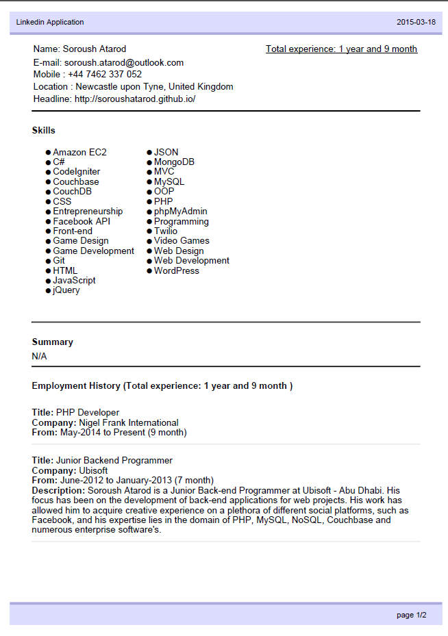

This library makes process of developing "Apply with linkedin" in few seconds. It generates a PDF from users profile as-well which can be send to consultants
It is extremely easy to use
$linkedin = new \Soroush\Linkedin\Linkedin($consumerKey, $consumerSecret);
// check if user is logged in
if ($linkedin->isLoggedIn()) {
// save the users linkedin application as a pdf
$linkedin->getApplication()->asPdf('applications/linkedin-application.pdf');
} else {
// get the Linkedin login URL
echo $linkedin->getLoginUrl();
}
$linkedin = new \Soroush\Linkedin\Linkedin($consumerKey, $consumerSecret);
// we cleared the tokens, so user needs to login again
// this is best used in job website, to prevent visitors spamming
$linkedin->clearToken();
{
"require": {
"soroush/apply-with-linkedin-php": "dev-master"
}
}
Then run
composer update
pecl install oauth
The main reason why I have not used OAUTH 2 is because linkedin doesn't allows any way to delete the tokens. As a result, a user can click on "Apply with linkedin Button" and spam the website. With OAUTH1 we can delete the token and force the user to authenticate via linkedin anytime!
The package has one template, which displays the total CV generated from linkedins members profile So far it mentions the the total years and month experience of the member. You can add your own templates as-well
To use your own template you would need to pass as a parameter to asPdf();
$linkedin = new \Soroush\Linkedin\Linkedin($consumerKey, $consumerSecret);
$linkedin->getApplication()
->asPdf('applications/linkedin-application.pdf', 'custom-template.php');
Please have a look at the current template in Soroush/Linkedin/Format/PdfTemplates/template-1.php
I will be adding a feature which you can mention the fields you need and let the library generate PDF based upon it
Having trouble with please contact me soroush.atarod@outlook.com